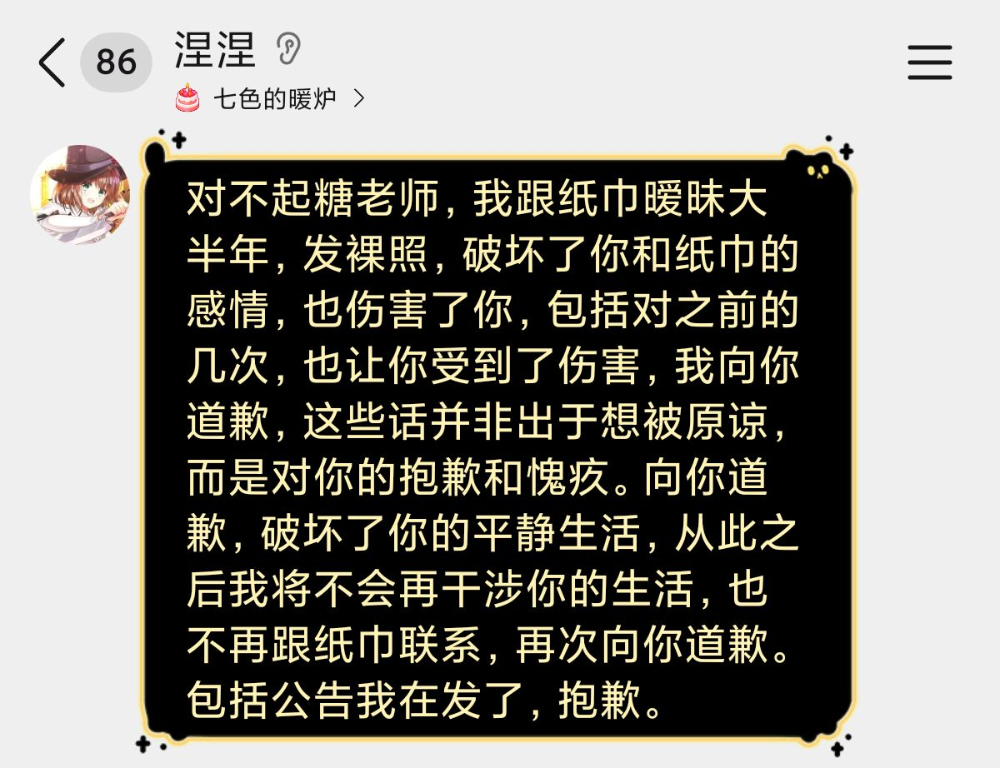

小虚空🍥
@tokerumaisurii
我笑出声，翻了几十条推文你对谁都可以严格，对涅，对清水，就是对出轨的知津一点戾气没有。你拿揪涅的道歉的标准揪一下知津的道歉呢？你拿挑涅的刺人身攻击她学历生活的狠劲攻击一下知津呢？你拿偏心知津纵容他对清水做的事的标准信任一下清水苛责一下知津呢？你给我小情侣没吵架只是借机骂人的感觉。

AAA糖浆专卖
@Lily_Syrup
哦？是吗？你这公告还没给我的道歉长
哦，给的道歉我也不觉得你在抱歉 https://t.co/XvAJpW19FI https://t.co/eWi6vmCJVR